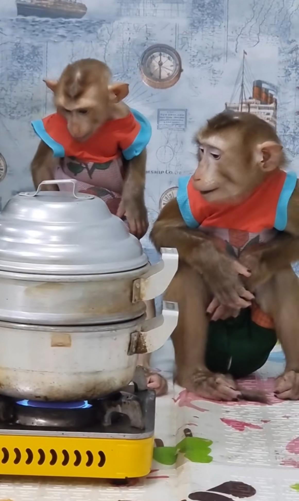
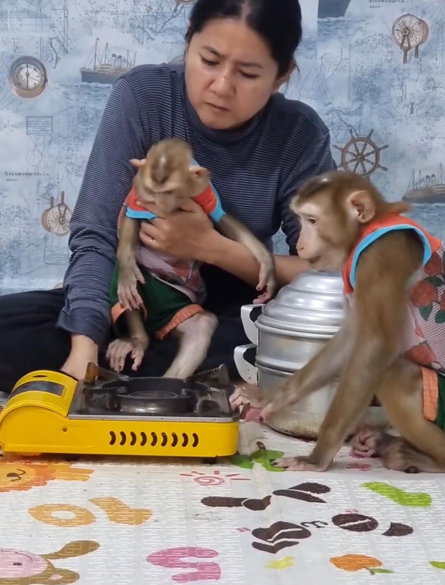
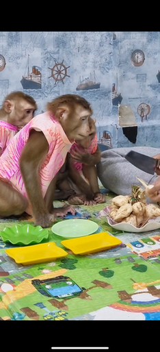
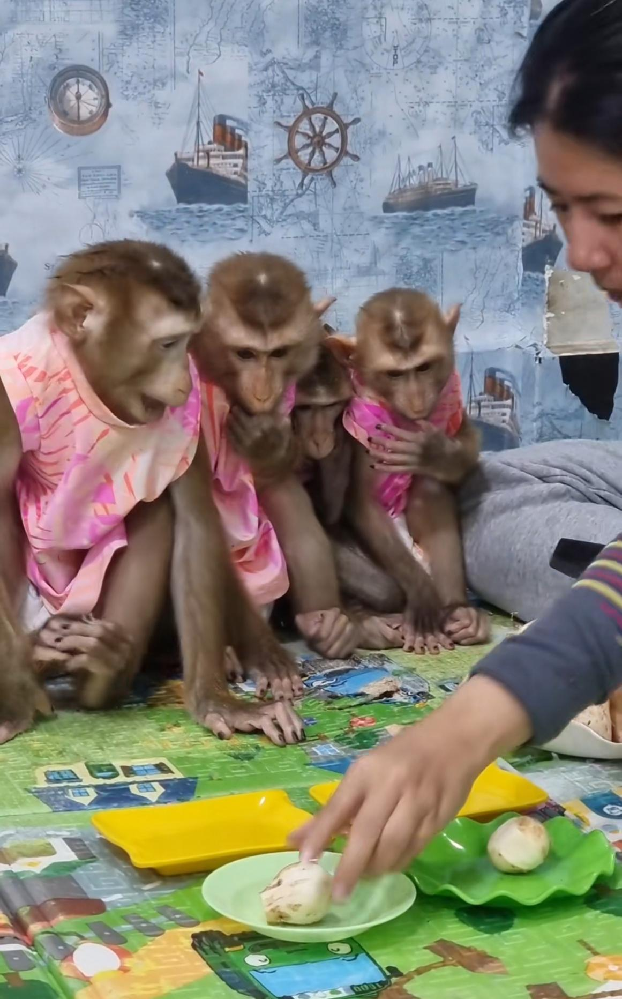
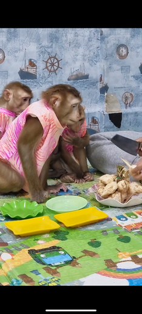
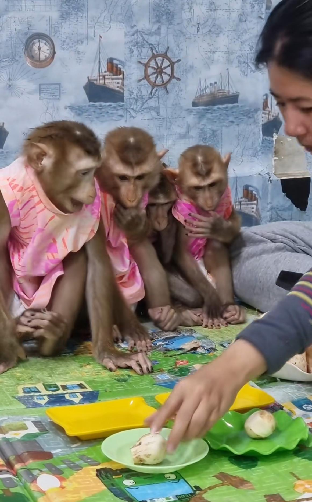
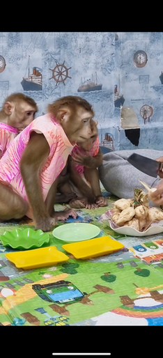
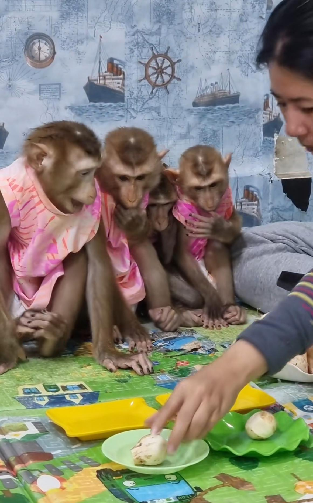

MALEO #4 - Vola
品种：豚尾猴
别称：北豚尾猴、平顶猴、猪尾猴、猪猴、平头哥
年龄：不详
性别：男猴
生活地区：东南亚一带
特征：乖巧帅气

简介与习性
长相是很典型的豚尾，头顶有倒“V”字形较为深色的毛发，耳朵非常大，耳朵上半部分是较为突出的，有点像精灵耳，面颊有点凹陷。
整体的视频光线偏黄，视频以记录vola日常吃饭、洗澡等为主，其主人喜欢让vola翘二郎腿呆傻地看远方。油管账号于2024年8月注销，目前尚存的视频在tiktok，希望vola一切安好。
更多图片


 




